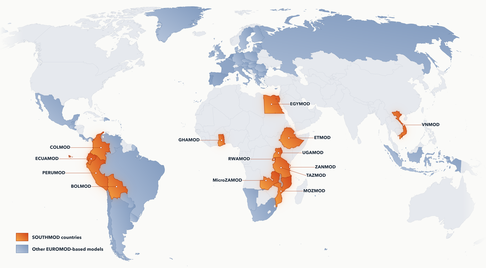

SOUTHMOD resources
Resources
UNU-WIDER SOUTHMOD page
UNU-WIDER currently hosts models across Africa, Latin America, Southeast Asia, and Zanzibar. The models are continuously updated and used for research and policy analysis by UNU-WIDER and partners.
Access models
Follow the steps to request access to the SOUTHMOD bundle and input datasets for the models of interest.
SOUTHMOD Online Training
This open-access course is ideal for anyone new to microsimulation or seeking to refresh knowledge of the SOUTHMOD model family.
SOUTHMOD Claude skill
A free Claude Code skill that turns Claude into a SOUTHMOD and EUROMOD assistant. It reads model XML, configuration, output, and documentation files and explains them in a modeller's language.
Model info
SOUTHMOD User Manual
A user manual for the harmonized SOUTHMOD model bundle, covering country models for Africa, Latin America, and Southeast Asia. It works both as an introduction for new users and a reference for experienced ones.
SOUTHMOD Modelling Conventions
The SOUTHMOD modelling conventions, based on the EUROMOD conventions and adapted for developing-country settings through the work of UNU-WIDER, ISER, SASPRI, and national teams.
Publications
Find links to selected SOUTHMOD works I've co-authored below:
- Synthetic data and AI in microsimulation models: a feasibility study using GHAMOD (Technical Note, 2026)
- Electricity tariff and VAT reform in Ethiopia: welfare, poverty, and cost-of-living spillovers (Working Paper, 2026)
- The cushioning effects of tax-benefit policies in Viet Nam during the COVID-19 pandemic (Book Chapter, 2025)
- Performance of tax-benefit systems during the COVID-19 pandemic in sub-Saharan Africa (Book Chapter, 2025)
- UGAMOD-TAX: a microsimulation model of taxation in Uganda (Technical Note, 2025)
- Microsimulation of tax-benefit systems in the Global South: a comparative assessment (Working Paper, 2024)
- Evaluating the impact of the 2023–2024 personal income tax reform in Rwanda (Working Paper, 2023)
- All SOUTHMOD Publications
Model map
Open map image{kind=link}
